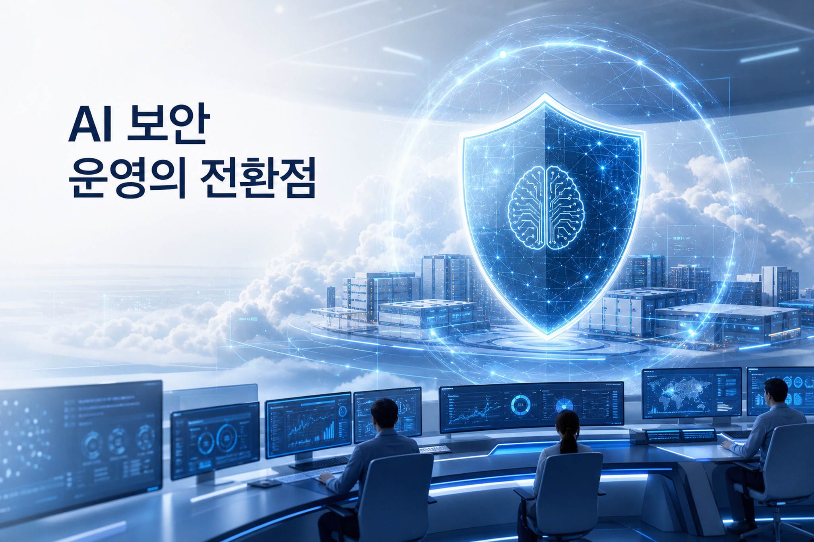
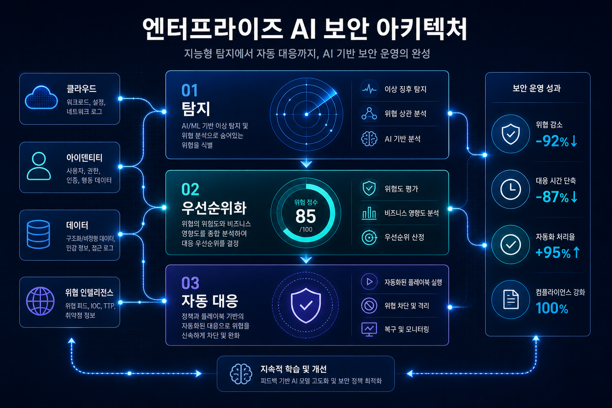
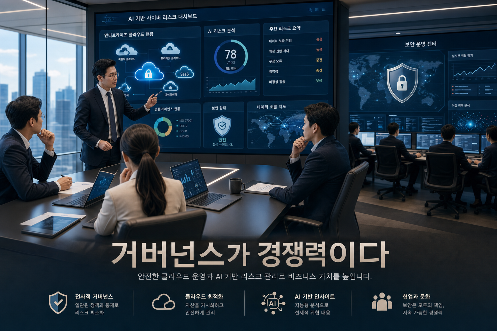

1. 공격자의 AI 활용이 보안 SLA를 재정의
원문은 공격자가 AI로 취약점을 더 빠르게 발견·활용한다고 설명한다. 이는 보안팀의 목표가 “모든 취약점 확인”에서 “사업 영향이 큰 취약점의 즉시 우선순위화”로 이동한다는 뜻이다.
Google Cloud가 발표한 Google AI Threat Defense는 단일 보안 제품 발표라기보다, 공격자도 AI를 쓰는 시장에서 기업 보안 운영 모델을 탐지·분석·우선순위화·대응 자동화 중심으로 재설계하라는 신호다.

보안의 병목은 더 이상 탐지 도구의 유무가 아니라, AI 속도로 발견되는 취약점과 공격 신호를 기업이 얼마나 빠르게 업무 우선순위와 실행으로 바꾸는가에 있다. Google AI Threat Defense는 Mandiant의 위협 인텔리전스, Gemini 기반 분석, Google Cloud Security 운영 역량을 결합해 이 속도 격차를 줄이려는 포지셔닝으로 읽힌다.
원문은 공격자가 AI로 취약점을 더 빠르게 발견·활용한다고 설명한다. 이는 보안팀의 목표가 “모든 취약점 확인”에서 “사업 영향이 큰 취약점의 즉시 우선순위화”로 이동한다는 뜻이다.
AI Threat Defense는 항상 켜져 있는 보안 플랫폼을 지향한다. SOC, 클라우드 운영, 애플리케이션 보안이 같은 위험 언어와 workflow로 연결되어야 한다.
Gemini, Mandiant, Google Cloud Security의 결합은 AI 플랫폼 경쟁이 모델 성능뿐 아니라 신뢰·보안·거버넌스 운영 역량으로 확장되고 있음을 보여준다.

취약점·위협 인텔리전스·클라우드 로그를 한 곳에서 연결해 공격 가능성을 조기에 포착한다.
AI가 위험도, 노출 범위, 비즈니스 중요도를 결합해 어느 이슈를 먼저 처리할지 제안한다.
패치, 정책 변경, 접근 제어, 티켓 생성 등 실행 체계와 연결되어야 실질 효과가 난다.
| 영역 | 기존 접근 | AI Threat Defense 이후 필요한 접근 | 한국 기업 체크포인트 |
|---|---|---|---|
| 보안 운영 | 알림 기반 수동 triage | AI 기반 위험 설명·우선순위·대응 추천 | 관제센터와 클라우드 운영팀의 책임 경계 재정의 |
| 취약점 관리 | CVSS 중심 일괄 처리 | 자산 중요도·노출·공격 가능성 기반 처리 | CMDB/자산 태깅 정확도와 소유자 매핑 |
| 거버넌스 | 정책 문서와 사후 감사 | AI 의사결정 로그, 승인 흐름, 예외관리 내재화 | 금융·제조·공공의 감사 추적성과 데이터 주권 검토 |
| AI 플랫폼 | 업무 생산성 중심 PoC | 보안·운영·개발 프로세스에 AI를 내장 | Gemini/Vertex AI 활용 시 IAM, 데이터 접근 범위, 비용 통제 |

주요 클라우드 자산, IAM 권한, 취약점 backlog, 보안 이벤트 source를 연결하고 소유자 정보를 정리한다.
AI가 생성한 위험 설명과 우선순위를 사람이 검토하는 human-in-the-loop 방식으로 정확도와 업무 절감 효과를 측정한다.
자동 대응 가능한 항목, 승인 필요한 항목, 금지 항목을 구분하고 로그·감사·비용 통제를 운영 정책에 반영한다.
이번 HTML은 이번 실행에서 신규 수집된 Markdown 1건을 기본 입력으로 작성했다. 다른 GCP 블로그 카테고리는 RSS가 유효하지 않아 HTML 목록 페이지 파싱 fallback으로 확인했으며, URL/파일명/정규화 제목 기준으로 중복을 제외했다.
/opt/data/home/brain/sources/gcp/20260527_[IdentitySecurity]Introducing Google AI Threat Defense to help you outpace the adversary.md# GPT Image 2 Prompt Log — GCP Daily Blog 20260528 ## Image Prompt 1 - 목적: 히어로 영역 — AI 기반 보안 운영 전환 메시지 - 삽입 위치: Hero 바로 아래 대표 이미지 - image2 prompt: Executive editorial hero image for a Korean enterprise technology blog: Google Cloud AI Threat Defense, autonomous AI cybersecurity shield protecting cloud data centers, blue/white Google Cloud-inspired abstract security operations center, no logos, no brand marks, premium magazine style, subtle Korean headline text inside image: 'AI 보안 운영의 전환점', clean readable typography - 권장 비율: 3:2 landscape - alt 텍스트: AI 보안 운영 전환점을 표현한 클라우드 보안 관제 이미지 ## Image Prompt 2 - 목적: 아키텍처 인포그래픽 — 탐지·우선순위화·자동 대응의 운영 계층 - 삽입 위치: 기술 변화의 의미 섹션 - image2 prompt: Infographic-style editorial visual for enterprise AI security architecture: three layers labeled in Korean inside the image: '탐지', '우선순위화', '자동 대응'; cloud, identity, data, threat intelligence nodes connected by light trails; modern clean design, dark navy background, no logos, readable Korean text - 권장 비율: 3:2 landscape - alt 텍스트: AI 보안 아키텍처의 탐지 우선순위화 자동 대응 계층 인포그래픽 ## Image Prompt 3 - 목적: 기업 실행 전략 — 이사회/보안운영/거버넌스 관점의 적용 이미지 - 삽입 위치: 실행 전략 및 거버넌스 섹션 - image2 prompt: Korean business strategy blog illustration: boardroom and security operations team reviewing AI cyber risk dashboard, enterprise cloud governance, data and AI icons, optimistic but serious tone, soft cinematic lighting, visible Korean caption in image: '거버넌스가 경쟁력이다', no logos, no real company names - 권장 비율: 3:2 landscape - alt 텍스트: 기업 보안 거버넌스 회의와 AI 위험 대시보드를 표현한 이미지